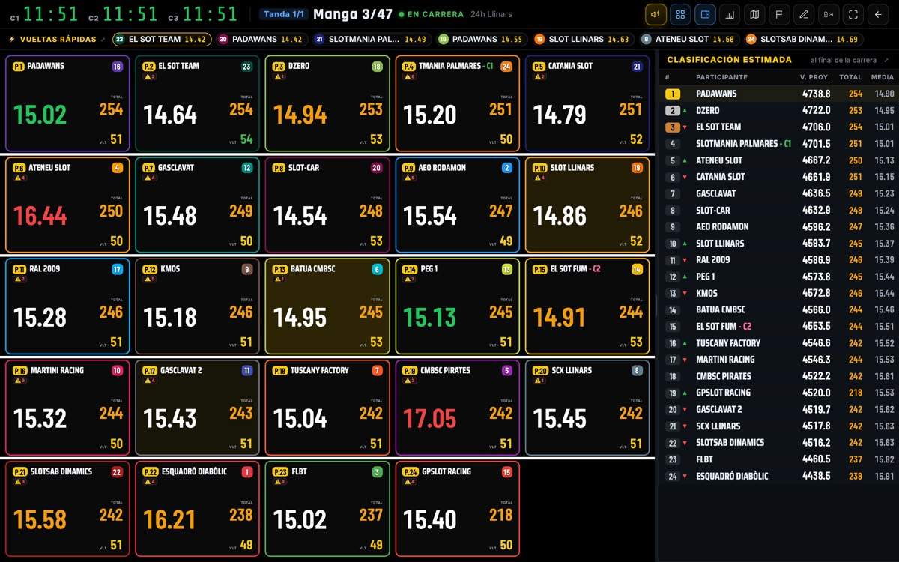

PitWall Manager
Manager se instala en el ordenador que tienes junto a la pista. Se conecta a tu cronometrador, cuenta las vueltas de cada coche y muestra la carrera en grande para que toda la sala la vea.
Manager se instala en el ordenador, no en el móvil. Abre esta página desde el ordenador de la pista para descargarlo.
¿Eres piloto? Lo tuyo es PitWall Lap, la app para el móvil.
Versión 1.64.1. Cuando termine de descargar, ábrelo y sigue los pasos.
¿Prefieres no instalarlo? Versión sin instalar (portable), que se abre directamente, por ejemplo desde un USB.
¿Cuál es el mío? Pulsa la manzana de arriba a la izquierda y elige «Acerca de este Mac». Si pone Chip Apple M1, M2, M3…, descarga el primero. Si pone Intel, el segundo.
Versión 1.64.1.
Versión 1.64.1 · AppImage, vale para cualquier distribución. ¿Usas Debian o Ubuntu? Paquete .deb.
Windows
Mac
¿Cuál es el mío? Pulsa la manzana de arriba a la izquierda y elige «Acerca de este Mac». Si pone Chip Apple, descarga el primero. Si pone Intel, el segundo.

Cómo se usa
Todo explicado paso a paso, con imágenes. Si es tu primera vez, empieza por los vídeos.
Aprende en vídeos
Vídeos de menos de un minuto: guardar tu pista, conectar el cronómetro, crear la carrera y dar la salida.
Ver los vídeos →Manual completo
Todo lo que hace Manager: carreras, tandas, pole, entrenamientos, correcciones y resultados.
Abrir el manual →Entender los resultados
Qué significa cada gráfico y cada número que aparece al terminar la carrera.
Abrir la guía →¿Sigues con dudas? Escríbenos a info.pitwall@gmail.com y te echamos una mano.
Qué hace
Cuenta las vueltas solo
Apunta cada vuelta y cada tiempo. Si se escapa una vuelta, la añades o la quitas sin parar la carrera.
Se ve desde lejos
Números grandes y colores claros, pensados para proyectarlos en la pared o verlos en una tele.
Carreras largas
Relevos, descansos y cambios de carril para carreras de resistencia, como unas 24 horas.
Los pilotos lo siguen en el móvil
Con PitWall Lap, cada piloto oye sus tiempos en voz alta. Los resultados pasan a PitWall Control para puntuar el campeonato.
Qué necesitas
- 1Un ordenador junto a la pista. Con Windows, Mac o Linux.
- 2Tu cronometrador. Un DS-300, conectado con su cable; un BART, por Bluetooth, o un interface TicTac, por USB.
- 3WiFi en el club (solo si los pilotos van a usar Lap en el móvil). No hace falta internet.